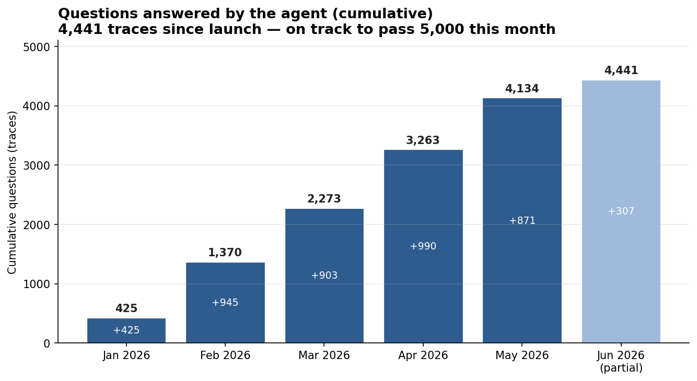
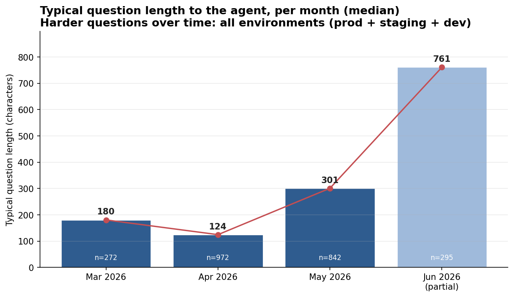

5,000 Analyses Later: Lessons from Building and Running an AI Agent in Production
Some ideas on building value-creative AI
For the past year, I was building a AI Agent and puting it in production: a custom agent for a small business, built to help its employees with the analytical work they do every day. This is not a chatbot demo and not a horizontal product. It is one agent, cover whole organization, in production.
Five months after launch now it answers roughly 1,000 analytical questions a month, and the number keeps climbing — on the order of 5,000 questions served so far.

Working on this project taught me lessons I keep repeating to other engineers, so I am writing them down. One caveat up front: building an AI agent inside an organization (the B2B case — you are building one deep solution for one business, not a product for a market) has no settled best practices yet. It is mostly engineering in a sense: trial and error until things work. The single biggest accelerant I found is working closely with a subject-matter expert and building a relationship tight enough to iterate fast. When that loop is short, the probability of success rises sharply.
Below, I am listing 5 lessons that i wish I knew earlier when I started this project, and type of learnings that I will be keeping in my mind for future projects.
TL;DR
- Work backward from the answer. Start from the questions and ideal answers your experts want, then build toward them.
- Observability is what takes you from 1 to N. You cannot scale what you cannot see.
- Shrink the loop between idea and product. Iteration speed is the whole game.
- The better the agent gets, the harder the questions become. Plan for it.
- A prompt is a semi-product. Encoding expert workflows is the competitive advantage — and the moat.
1) Work backward from the answer you want
This is where I would start any agent project. Do not begin with the model or the architecture. Begin with the questions.
Collect five or ten questions that people in the organization actually ask — analytical or insight questions that take real time and that they would genuinely value handing of them to AI agent. Note that this was case when I started the project last year. However, this year, with all progress made in agentic AI, you can replace questiosn with workflow, or any long horizon task, that you belive AI-agent can do that.
Then build a simple three-column table:
| The question | The context needed to answer it | The ideal answer |
|---|---|---|
| A real question someone in the organization asked | The specific data, external knowledge, or internal documents required to answer it well | What a complete, correct answer looks like , defined by your expert |
The first column is the demand. The second column is the hard part: the specific data, the external knowledge, the internal PDFs — every source needed to produce a correct answer. The third column, written by your client or expert, is the target.
Starting from the answer would force clarity to AI-enginners about what the agent is actually for. Once the target exists, you can work backward to the context, get a first response from the model, and iterate against a known goal.
The whole lesson fits in one line:
\[ \text{Ideal Answer} \;=\; \operatorname{Agent}(\text{Question},\; \text{Context}) \]
Most teams read this left to right: take a question, throw context at the agent, and hope the answer is good. Work backward instead — start from the ideal answer your expert defined, hold the question fixed, and figure out the context that gets you there.
2) Observability is what takes you from 1 to N
You can get from zero to one by talking to your client and your subject-matter expert. Getting from one to N — scaling — requires that you see, for every interaction, what was asked, what the agent answered, which tools it called, and how it arrived at the result.
Observability is not only monitoring. It is also a great tool to help you iterate faster. As soon as I had a view into the questions and the agent’s responses, every subsequent iteration got easier: I could see what was being asked, what context each class of question needed, and where the agent fell short. The trace log is also the best idea generator you have — it tells you what to build next.
3) Shrink the loop between idea and product
As an engineer, your first job on an agent project is to reduce the time between having an idea and putting it in front of a user. Set things up so you can get feedback from your subject-matter expert quickly and ship the change immediately. This is product development, and the variable that matters most is iteration speed.
It works best with small teams on both sides: one or two full-stack engineers and one or two domain experts, iterating together. The shorter the team, the shorter the loop.
In practice, I built tooling so that my Slack conversations with the client feed directly into the agent’s development — the feedback channel and the build channel are the same channel. The question I keep asking is simply: how do I make this loop faster?
4) The better the agent gets, the harder the questions become
Expect the questions to get harder over time. I was consistently surprised by how much more demanding users became — they kept reaching for longer-horizon tasks.
There are two reasons. First, once the easy questions are reliably answered, users push for the hard ones; that is where the remaining value is. Second, as model capability improves, genuinely long-horizon tasks — ones that take the agent 30 to 40 minutes to work through — become feasible, so users ask for them. Plan for this from the start: the demand curve shifts toward difficulty, not away from it.
This is measurable. Tracking the length of incoming questions in LangSmith is a cheap proxy for difficulty, and it climbs as users move to longer-horizon work.

5) A prompt is a semi-product
This is where the moat lives. The obvious objection to building a custom agent is: why bother, when Copilot, Claude Code, and other general tools exist? The answer is that businesses hold two things those tools cannot reach — internal knowledge, and specific prompts.
I think of a prompt as a semi-product. A good prompt encodes a long, particular workflow that one senior person in the business knows and others do not. Converting those prompts into skills the agent can execute is what turns a generic assistant into a custom solution — and into a competitive advantage that a general-purpose tool cannot replicate, because it never had access to that workflow.
The flexibility is the point: you control not just the context the agent receives, but how it works and how its interface is shaped, so it fits the business exactly.
That fit is the differentiator. My view, stated plainly: every company should have its own agent, customized to its workflows — because that customization is the only durable advantage. The model is a commodity. The captured workflow is not.